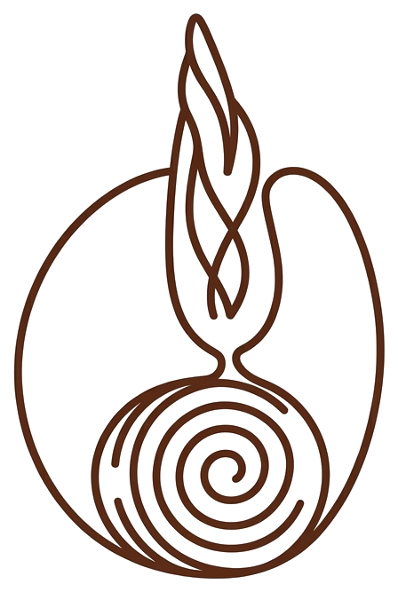
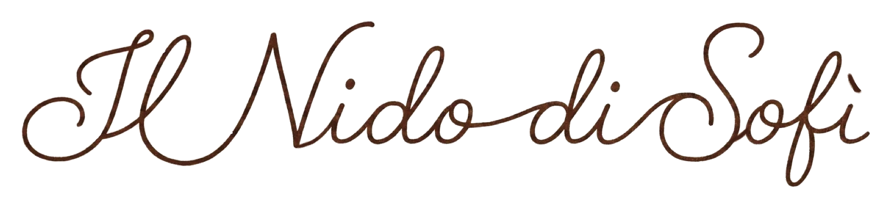
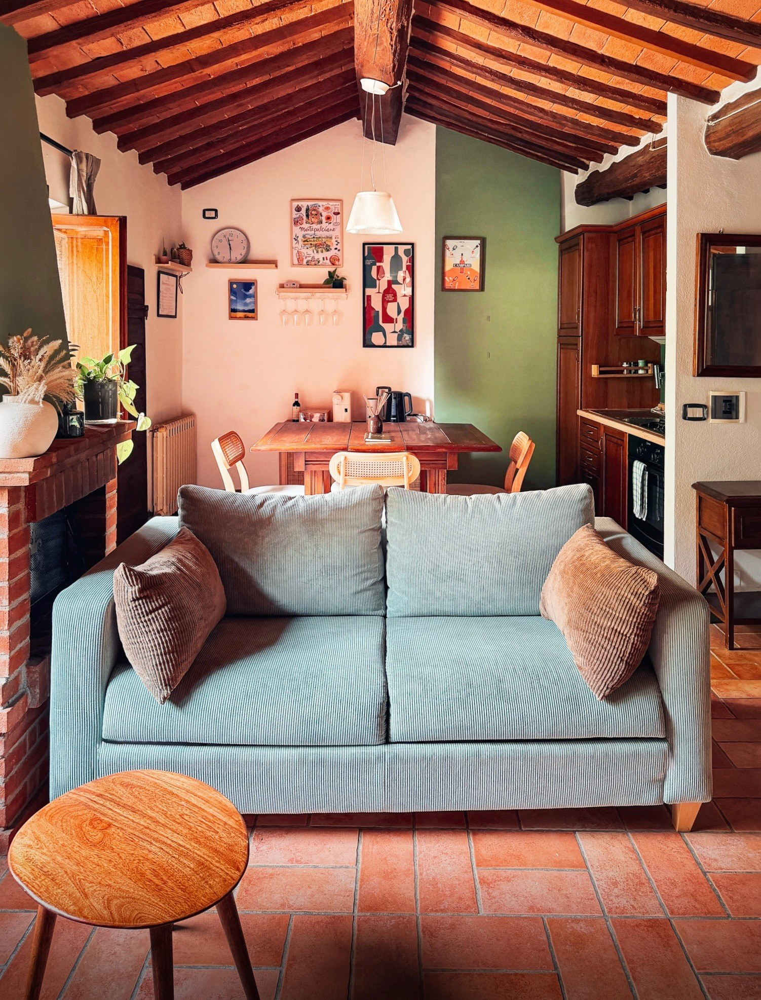
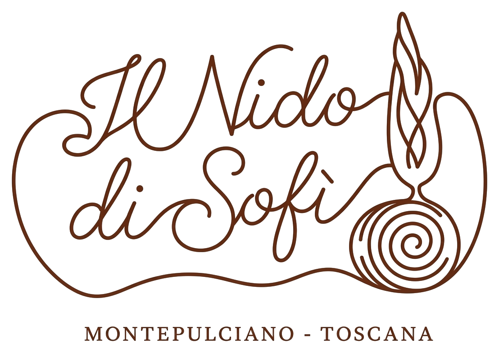

Fortezza
Circa 2 minuti. Il punto panoramico ideale per iniziare a guardare la Val d'Orcia dall'alto.



MONTEPULCIANO · TOSCANA · ITALIA
Autentica, intima e a pochi passi da Piazza Grande.

Il Nido di Sofì si trova in Via del Poliziano, nel cuore di Montepulciano: una posizione da cui il borgo si scopre naturalmente a piedi.
La Fortezza, Piazza Grande, enoteche e ristoranti sono a pochi passi. Una volta lasciata la porta di casa, non serve programmare tutto: basta uscire e lasciarsi guidare dalle strade del centro storico.
Una piccola dimora toscana pensata per vivere Montepulciano con calma, tra cotto, travi a vista e il carattere autentico di una casa nel centro storico.
Dal Nido puoi raggiungere facilmente alcuni dei luoghi e degli indirizzi che rendono speciale il soggiorno.
Circa 2 minuti. Il punto panoramico ideale per iniziare a guardare la Val d'Orcia dall'alto.
Circa 5 minuti. Il cuore monumentale di Montepulciano, tra palazzi storici e vicoli.
Una delle tavole storiche del borgo, perfetta per una cena toscana sostanziosa.
Pizza e atmosfera informale, un indirizzo che consigliamo volentieri ai nostri ospiti.
Negli ultimi giorni di agosto le otto contrade animano il centro storico con prove, cortei, cene e bandiere. La festa culmina nell’ultima domenica di agosto, quando due spingitori per contrada fanno rotolare botti da circa 80 kg lungo le strade in salita fino a Piazza Grande.
Soggiornare al Nido durante il Bravìo significa vivere la città dall’interno: le contrade aperte, il Corteo dei Ceri, il corteo storico e l’attesa della gara trasformano ogni sera in qualcosa di diverso. È uno dei periodi più intensi e caratteristici dell’anno a Montepulciano.
Il Nido di Sofì nasce dal desiderio di avere a Montepulciano un posto semplice, accogliente e davvero nostro. Oggi ci piace aprirlo a chi vuole scoprire questo angolo di Toscana senza rinunciare alla sensazione di sentirsi a casa.
Abbiamo cercato di conservare il carattere della casa e di aggiungere tutto ciò che rende un soggiorno semplice, piacevole e autentico.
Montepulciano è una base perfetta per alternare il centro storico a giornate tra colline, borghi e terme.
Invia una richiesta con le date desiderate. Verificheremo personalmente la disponibilità e ti risponderemo via email prima del pagamento.
La richiesta non costituisce ancora una prenotazione: riceverai la conferma della disponibilità via email. Il pagamento online verrà richiesto solo successivamente.
Il Nido utilizza il self check-in tramite cassetta di sicurezza. Le istruzioni complete vengono inviate prima dell'arrivo.
Tra le possibilità più vicine ci sono il parcheggio della Fortezza, circa 2 minuti a piedi, e i parcheggi P8 Via dei Filosofi e P7 Via dell’Oriolo, circa 5 minuti.
L'appartamento si trova al terzo piano di un edificio storico e non dispone di ascensore. Per questo può non essere adatto a persone con difficoltà motorie.
Sì, gli animali sono ammessi. Ti chiediamo semplicemente di segnalarlo nella richiesta.
Al momento il camino a legna non è utilizzabile per motivi di sicurezza.